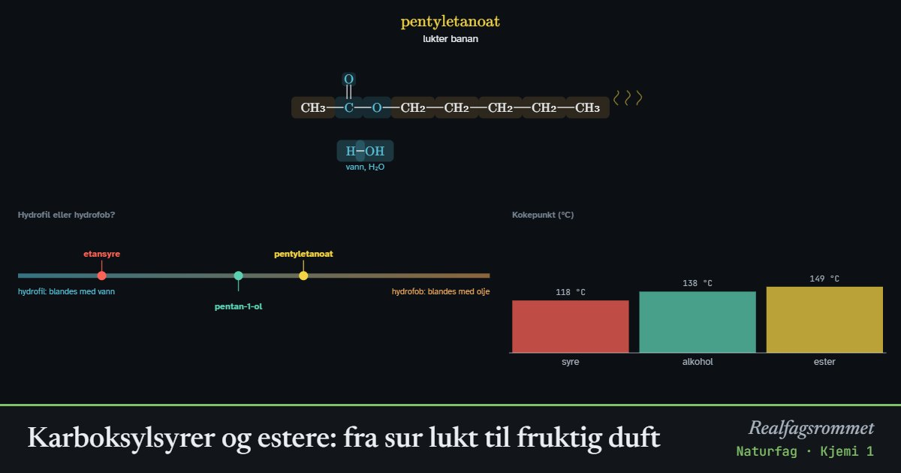

Karboksylsyrer og estere: fra sur lukt til fruktig duft
Karboksylsyrer lukter ofte surt eller vondt. Når en karboksylsyre reagerer med en alkohol, dannes en ester og vann. Mange estere lukter fruktig og brukes i parfymer og smaksstoffer.
Start animasjonen
Formler
Om animasjonen
En karboksylsyre har karboksylgruppen –COOH. Den kan gi fra seg H⁺, så stoffet er en svak syre. Eddiksyre (etansyre) i eddik og maursyre (metansyre) fra maur er eksempler.
Når syren og alkoholen varmes med litt svovelsyre som katalysator, går OH fra syren og H fra alkoholen sammen til vann. Resten kobles sammen til en ester. Reaksjonen kalles forestring og er en kondensasjonsreaksjon.
Blå bakgrunn markerer de hydrofile (vannelskende) delene av molekylet, og gul bakgrunn de hydrofobe (vannskyende) karbonkjedene. Esteren har ingen OH-gruppe og kan ikke danne hydrogenbindinger med andre estermolekyler. Derfor koker den lavere og fordamper lettere enn syren, og lukten når fram til nesen.
Lange karbonkjeder gjør stoffet mer hydrofobt og mindre løselig i vann. Duftbeskrivelsene er omtrentlige, og mange estere lukter annerledes i høye konsentrasjoner.
Prøv dette
- Lag esteren som lukter banan. Hvilken syre og hvilken alkohol brukte du?
- Sammenlign kokepunktet til butansyre og etylbutanoat. Hvorfor koker esteren lavere selv om molekylet er større?
- Hvilket oksygenatom i esteren kommer fra alkoholen? Hvilke atomer blir til vann?
- Hvorfor blir esteren mer hydrofob når du bytter etanol med oktan-1-ol?
Kompetansemål
- Naturfag: Karbonforbindelser og karbonets betydning for livet
- Kjemi 1: Navnsetting i organisk kjemi
Mer om organisk kjemi og polymerer
- Organiske stoffer, navn og reaksjonstyper
- Karbonforbindelser og forbrenning
- Polymerer: addisjon og kondensasjon